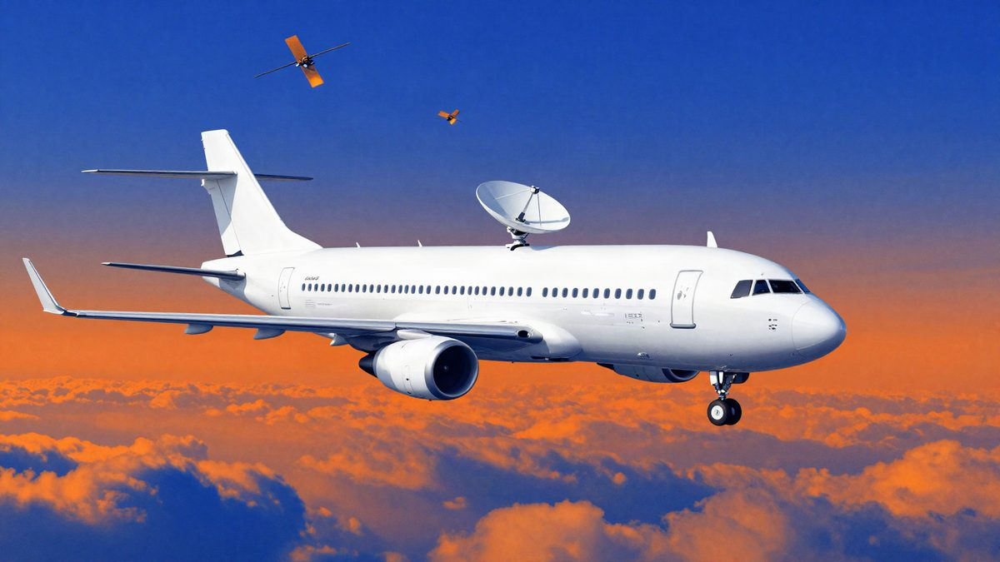

Lufthansa ubrzava Starlink: svaki mjesec po 10 aviona, cijela flota do 2029.

Lufthansa Group planira Starlinkom opremiti oko 850 aviona do 2029., a prema internoj poruci uprave koju navodi Flight Global, ugradnja ide po 10 aviona mjesečno. Prvi redovni let sa Starlinkom bio je 19. kolovoza 2026. na Airbusu A320neo.
Lufthansa ubrzava ugradnju satelitskog interneta Starlink u svoje avione. U internoj poruci uprave zaposlenicima, koju navodi Flight Global, stoji da prijevoznik namjerava opremati po 10 aviona mjesečno. Poruka je dio plana za smanjenje troškova i povećanje profitabilnosti glavnog prijevoznika.
Prvi redovni let Lufthanse sa Starlinkom obavljen je 19. kolovoza 2026. na Airbusu A320neo. Do kraja godine grupa planira opremiti oko 50 aviona.
Cijela flota do 2029.
Lufthansa Group do 2029. želi Starlink ugraditi u cijelu flotu od oko 850 aviona. Program ne obuhvaća samo Lufthansu, nego i SWISS, Austrian Airlines, Brussels Airlines, Eurowings i Discover Airlines. Internet će biti dostupan putnicima u svim klasama.
Da avioni zbog ugradnje ne bi stajali izvan prometa, antene će se postavljati tijekom planiranog tehničkog održavanja.
Wi-Fi kao izvor prihoda
Brzi Wi-Fi na letu Lufthansa ne vidi samo kao dodatnu uslugu za putnike, nego i kao potencijalni izvor prihoda. Osnovni pristup internetu trenutno je besplatan u svim klasama za članove programa Miles & More i vlasnike Travel ID-a.
Iskustvo konkurencije pokazuje da Starlink može pomoći u borbi za putnike. United Airlines je ranije izvijestio o primjetnom porastu broja putnika zahvaljujući brzom internetu u avionima.
Izvor: iXBT